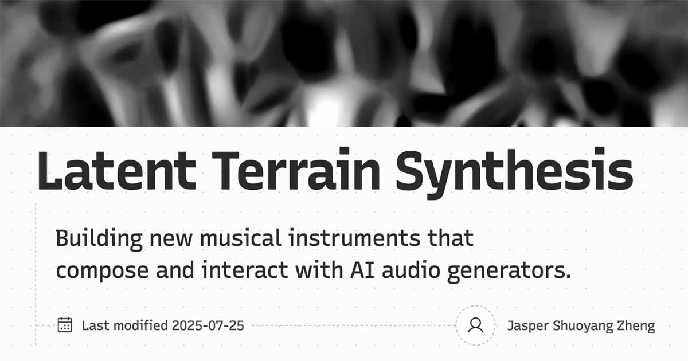

潜在地形：当编解码器的内部空间变得可演奏
Latent Terrain: When the Codec's Interior Becomes an Instrument

Latent Terrain 是 Jasper Shuoyang Zheng 在博士研究中历经十二个月开发的 Max 外部工具包，并于 2026 年 6 月在 NIME（新音乐接口国际会议）上正式展示。它的核心动作是：拿一批你自己录制的声音，让神经音频编解码器（RAVE、Stable Audio、Music2Latent 等）将它们编码为潜在向量，再用一个小型神经网络学习空间坐标与这些潜在向量之间的映射关系，最终得到一张可以用触控板、控制器或传感器实时游走的音色地图。移动慢，声音渐渐变形漂移；移动快，声音碎裂、跳跃、熔合成新的质地。四位艺术家与 Zheng 合作完成了具体作品：Keigo Yoshida 用脑电波信号驱动地形导航，同时让声音空间持续重训，制造出"表演者渴望平静而系统倾向唤醒"的对抗张力；Jiatong Liu 用北京胡同消逝中的录音档案建造地形，让倾听者在其中空间漫游。
神经音频编解码器的已构形态是：压缩基础设施。RAVE、Stable Audio、Music2Latent 被设计来完成一项特定任务——把音频压缩为紧凑的潜在编码，再重建出来。整个 AI 音频生成的产业生态，都把潜在空间视为手段而非目的：输入音频或文字提示，穿越潜在空间，抵达另一侧的输出。即便是最具实验性的实时变换应用，也只是从 A 走向 B；没有人住在其中。编解码器通过大量音频数据的训练，在内部建立了一张音色拓扑——声音如何彼此相关、聚类、过渡的隐式地图。这是高效压缩的副产品，从未被视为创作空间。凿构动作在这里是：Latent Terrain 悬置了编解码器的目的性。它不要求编解码器编码或重建；它问的是：这个被学到的空间本身是什么形状？将你的声音录入，让空间的几何结构显现，然后把那张从未打算被人游走的内部地图——交给演奏者。余项是：编解码器理解声音的方式，那张从训练数据中析出的音色拓扑，一直都在，只是从来不是重点。
四位艺术家的描述里有一个共同的词：不可预测性。Nico García-Peguinho 谈主动倾听作为创作方法，"与空间给你的东西一起工作"；Keigo Yoshida 谈"让系统追踪并实时访问过去的状态，而不是建立对结果的完全控制"；Jiatong Liu 把"学会处理不可预测性"视为核心设计问题，而不是需要消除的问题。这些不是对工具难用的委婉解释——这是余项在场的直接体验。被游走的空间有自己的逻辑，那个逻辑不是为人类演奏设计的；演奏者进入的是一个由机器学习析出的、既非随机亦非可控的地形，它的规律是真实的，只是不属于任何现有的声音学科。
此刻，"AI 音频 = 提示生成"的构建正在固化。整个产业的叙事正在向这个方向收缩：说出你要什么，系统交付。随着这一构建的完成，"进入编解码器内部地图游走"的想象空间将越来越难以被思考——它将被视为一种创作技法，而非对一片从未被命名的领土的真实发现。NIME 2026 的学术展示是命名过程的开端，但还未结束：Max for Live 版本即将推出，支持的编解码器仍在扩展，Pure Data 版本被提及。命名空缺极为真实——不是 AI 生成工具（无提示），不是合成器（无振荡器），不是采样器（操作的是结构几何而非音频材料），不是 FluCoMa 式语料合成（FluCoMa 依赖音频分析描述子建立映射；Latent Terrain 依赖编解码器习得的潜在拓扑，两种认识论的差别）。Zheng 自己写道："当你把它们拆开，里面的东西事实上是真正可演奏的。"这句话是余项意识的直接表达：去找到还没有人住进去的地方，把它变成乐器。
jasper-zheng.github.io/nn_terrain ↗Latent Terrain is a Max/MSP package by Jasper Shuoyang Zheng, developed over twelve months of performance practice and collaboration with four musician-researchers, and presented at NIME (New Interfaces for Musical Expression) in London in June 2026. The core operation: take a collection of your own sounds, run them through a neural audio codec (RAVE, Stable Audio, Music2Latent), record the latent vectors they produce, then train a small neural network to map spatial coordinates onto that latent territory. The result is a navigable 2D soundscape you can move through using a stylus, touchscreen, sensor, or controller — move slowly and timbres shift and drift; move quickly and they shatter, fracture, fuse into new textures. Four collaborators built actual works with the tool: Keigo Yoshida routed EEG brain signals into the terrain navigator while the sound space continuously retrained on incoming data, creating what he called "an adversarial tension between the performer's desire for calm and the system's pull toward arousal." Jiatong Liu built an ambient archive from field recordings of Beijing's rapidly disappearing Hutong neighborhoods and let listeners walk through it spatially. CDM featured the tool the same month.
The already-construct is the neural audio codec as compression infrastructure. RAVE, Stable Audio, Music2Latent — these models were designed to perform a specific task: compress audio into compact latent representations and reconstruct it. The entire AI audio generation ecosystem treats latent space as a means, not a destination. Input a prompt or a sound, pass through the latent space, arrive at output on the other side. Even the most experimental real-time transformation uses move through the codec's interior from A to B; nobody was meant to live there. Through training on vast audio data, these codecs built internal topologies — implicit maps of how sounds relate, cluster, and transition — as a byproduct of learning to compress efficiently. That topology was never intended as artistic territory. The chisel Latent Terrain performs is to suspend the codec's purpose entirely. It doesn't ask the codec to encode or reconstruct. It asks: what is the shape of the space the codec learned? Feed it your sounds, let the spatial geometry emerge, then hand that never-meant-to-be-traversed interior map to a performer. The remainder is the codec's understanding of sound — its learned timbral topology, distilled from training data — which was always there but was never the point.
Every one of the four collaborators describes working with unpredictability as a central fact of the experience, not a problem to be solved. "Active listening as a compositional approach — you work with what the space gives you." "Letting the system trace and access past states in real-time, not to establish full control over the outcome." "Learning to deal with the unpredictability" as a design question, not an obstacle. This is not a polite way of saying the tool is difficult to use. It is the direct phenomenological encounter with a remainder: a space whose organizing logic was distilled by machine learning from vast human-produced audio, whose structure is real and consistent, but was not designed for human traversal. The performer enters territory that belongs to no existing musical discipline. The rules are there — they were learned — but they were not learned for this.
The construct "AI audio = type what you want, receive output" is solidifying right now. As that cultural logic hardens, the imaginative space for inhabiting a codec's interior topology becomes harder to access — it starts to look like technique rather than the discovery of genuinely unnamed territory. NIME 2026 is the beginning of the academic naming process, but it has not finished: Max for Live devices are still inbound, support for additional codecs is expanding, a Pure Data version is being considered. The naming gap is acute. This is not AI generation (no prompts), not synthesis (no oscillators), not sampling (structural geometry rather than audio material), not FluCoMa-style corpus synthesis (FluCoMa maps sounds by audio analysis descriptors; Latent Terrain maps by learned latent topology — a different epistemology entirely). Zheng himself writes: "I'm not particularly interested in typing prompts to make stuff, I'm interested in breaking them and dissecting them, and when you crack them open, what's inside turns out to be genuinely playable." That is the remainder discoverer's sentence: go find the space no one has moved into yet, and make it an instrument.
jasper-zheng.github.io/nn_terrain ↗